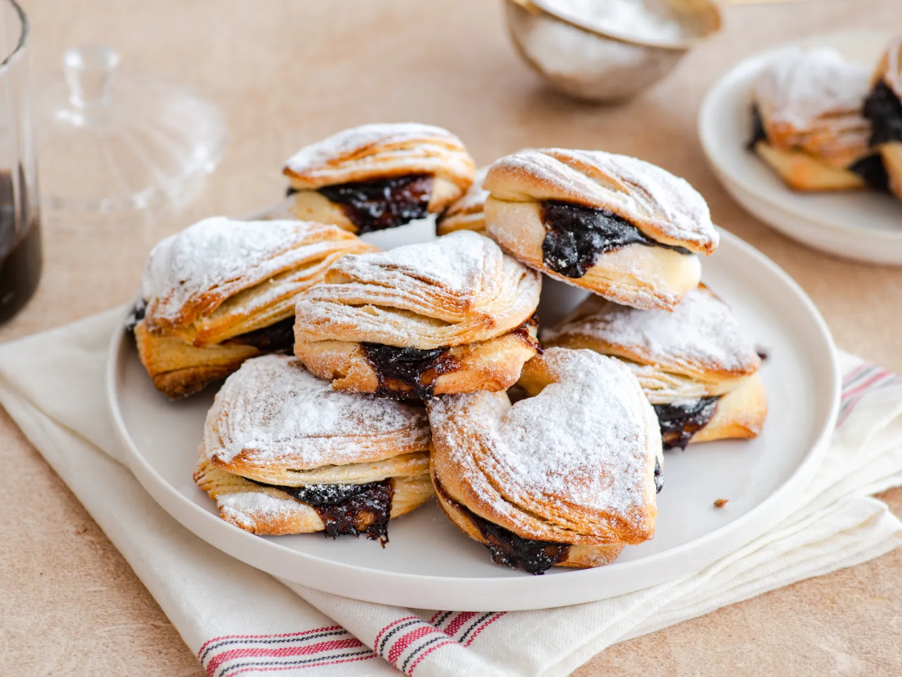

Salenjaci
Home

Description
Traditional salenjaci are filled with jam and are most often
shaped into triangles. The addition of lard in the yeast dough
gives them a special flakiness, and after baking, they are
dusted with powdered sugar.
Ingredients
- 300 g of lard
- 1 kg plain of flour
- 3 tablespoons of sugar
- 1 tablespoon of salt
- 2 packets of yeast
- 1/2of baking powder
- 1 egg
- 100 ml of sparkling water
- 500 ml of milk
- 150 g of powdered sugar
- 1 jar of plum jam
Steps
- Pork lard needs to be cleaned of veins and membranes.
This can be done in several ways: one way is to scrape the
lard off the veins with a knife, and another is to grind it
in a meat grinder with smaller holes (the veins will stay
inside the machine). You can also chop the lard in a blender
or grate it by hand on a grater.
- For the yeast dough, in a bowl, mix all the dry ingredients:
flour, sugar, salt, instant yeast, and baking powder.
- Then add the egg, egg yolk, sparkling water, and warm milk, and knead
the dough until it is smooth and elastic.
- You can first mix with a mixer, and then finish kneading by hand on a floured surface.
Leave the smooth dough covered to rise for 30-40 minutes.
- Roll the risen dough into a rectangle, 1 cm thick (it's important to have right angles
for proper folding).
- Spread half of the lard over the entire surface of the dough.
- Fold the dough like you would for puff pastry. First, fold the
left side towards the center, then fold the right side over it.
Now fold the top and bottom sides. Cover the folded dough with
a cloth and let it rest for 15 minutes.
- Repeat the entire process once more, then let the dough rest for 20 minutes. Roll out
the rested dough to a thickness of about 0.5 cm and cut into squares.
- Place jam on each square, fold the dough into a triangle, and then fold the edges.
- Place the salenjaci on a baking sheet lined with parchment paper, leaving small gaps
between them. Cover them with a cloth and let them rest for 20 minutes before baking.
- Pecite ih u pećnici zagrijanoj na 200 °C oko 20 minuta, a gotovi su kada dobiju boju i lijepo se nadignu.